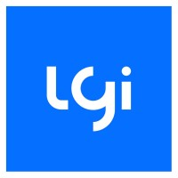
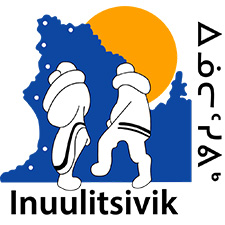
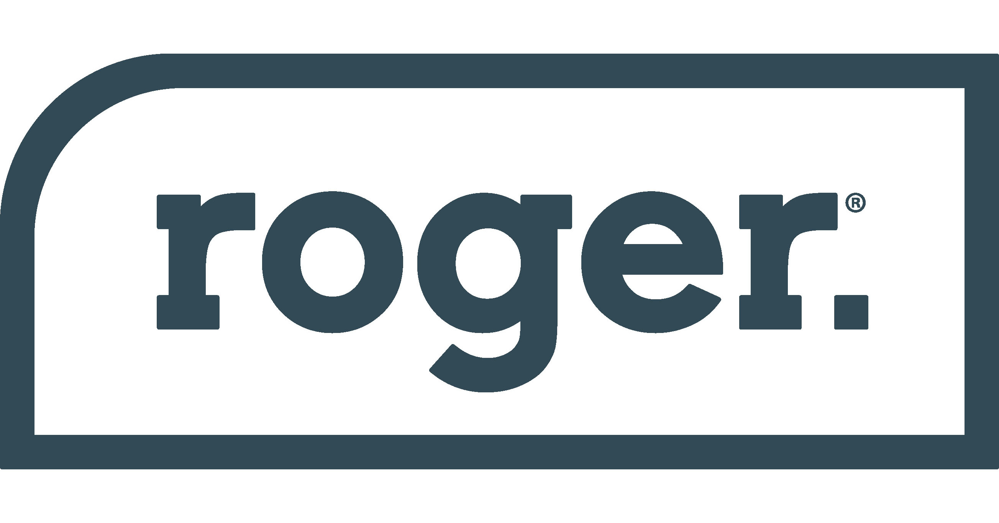

Mon CV
Sommaire
Des arts visuels à la gestion de produit, en bifurquant vers les approvisionnements au Nunavik, ce qui me caractérise dans mon parcours éclectique, c'est ma capacité à mener à bien différents projets.
Expérience de travail
Chez Lgi Solution santé (2012-2023)
- Propriétaire de produit (Product Owner)
- Analyste d'affaires
- Conseiller à l'implantation
Centre de santé et de services sociaux Inuulitsivik (2008-2012)
- Chef des approvisionnmeents, de la logistique et des transports
- Techniciens aux achats
Travailleur autonome (2002-2008)
- infographisme et graphisme
- Conception vidéo
Savoirs
- Savoir-Faire
- Priorisation efficiente
- Communication efficace
- Adaptabilité
- Esprit d'analyse
- Résolution de problème
- Savoir-Être
- Leadership
- Empathie
- Engagement
- Curiosité
- Ouverture d'esprit
Compétences
- Débute en HTML
- JIRA
- Confluence
- Suite Office
- Ms Project
- Visio et autres outils de schématisation
- Photoshop>
- Illustrator
- Premiere
Certifications
- Pragmatic Institute : Product management certified - Level II
- Lean Six Sigma - Ceinture jaune
- AFI Expert : Fondement de l'Analyse d'affaires
- HEC Montréal / École des dirigeants : Gestion du changement
- Professional Scrum Master - I